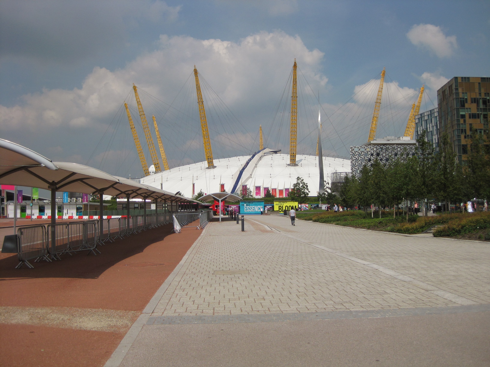

Venue Specific Training
Saturday 16th June 2012
After a sausage sandwich cooked by Anne, I walked down Richmond Hill to get the London Overground from Richmond to Stratford. I was at FDO on
time but Central Line problems meant we didn't start until 8.20am. Got a reprise of the radio protocol and Olympic Sat Nav (DORS) operation
followed by a Q&A session which confirmed we have access to the Olympic Park but not specific venues. Lunch collection was followed by
allocation to a car (4 per vehicle). Totally by chance was next to Lea from Day 1 training. All cars were on floor 8 of the car park. Had to
fill out the checkout form to ensure the car had no defects. Our other two occupants were Peter (a retired Mechanical Engineer from the oil
industry) and Ken, who Lea had met at UDAC.
Radieod in to get our first destination which was North Greenwich Arena. Ken wasn't prepared to wait for clearance to leave and disappered to
hassle the FDO staff. I was more interested that DORS wasnt working for us or the car next door. It was decided that it would work once we left
the car park so we set off with Peter driving and Ken and I in the back. The sat nav seemed to kick in but was not sending us in a Blackwall
Tunnel direction. We attempted to reset DORS but to no avail. We attempted to get the BMW sat nav working but too many cooks spoilt the broth
and we ended up with Ken deciding to use the map book before we went over Tower Bridge. A very scenic detour took us under the Guoman, across
the lock at St Catherine's Dock and over the cobbles past the Dickens Inn. At this point both Ken and I activated the SatNav on our phones.
We eventually got through the Blackwall Tunnel but the BMW SatNav didn't take us off at the correct exit. Ken decided we should just tell
control we were at NGA so we could get a new destination. I, who was in charge of the radio, vetoed that idea. I wanted to kill him!

We were driving around Greenwich when control asked where we were. We told them we were struggling with both SatNav's and she let us head to
Greenwich Park as we were closer to that than to NGA. As we approached the car park we had gone to on the last training day I told Peter that
I recognised where we were and we should turn right to get to the T3 drop off/pick up zone. Ken stridently directed Peter to keep straight on
because Greenwich Park was up the hill. I told him again we should stop as we were at our destination. He again ignored or countermanded me.
Peter took the diplomatic option by stopping after a bit and declaring we had arrived.
It was Ken's turn to drive. He got Royal Artillery Barracks as his destination which was no distance at all so very quickly it was my turn. I
was given Lea Valley as my destination. Ken wasn't pleased as that was a long drive out of the city centre. We pointed out they were keeping
us out of there until the Trooping the Colour was over. Ken was very uncomplementary about my speed over the sleeping policeman and my speed
around a corner going fronm the M25 to the M11 but I just ignored him. The postcode was a bit off but we did spot the entrance to the Lea
Valley centre.
We decided to have lunch at this point as we needed comfort breaks and the only likely location was a McDonalds on the corner. It was Peter's
first ever visit to a McDonalds so we took a photo of him which he sent to his grown up kids. It was Lea's turn to drive and we were directed
to Hadleigh Farm. We were warned we would be out of radio range en route and should phone in to get our next destination. The M25 had a large
prang on it as we passed so we phoned in to stop other people being sent to Lea Valley.
The Hadleigh Farm complex is still being built and is got to via a small housing estate. I don't fancy that at Games time proper. Next
destination was Wembley. Peter drove and I navigated as we were avoiding the immediate M25 and the North Circular. It was a long way around
but we got to Wembley on Engineers Way no bother. Next destination was Ken driving to Lords. The traffic was appalling almost all the way. I
did recognise the area around Genesis when we got to it. We never got to Lords itself as it was too late, so we fought our way back to the FDO
failing miserably to find a BP garage en route. On arrival at Euston I found that Saurday is the only day that the First Class lounge shuts at
5.00pm. A 2 hour wait at Euston was not a great experience and the lack of alcohol continued on the train.